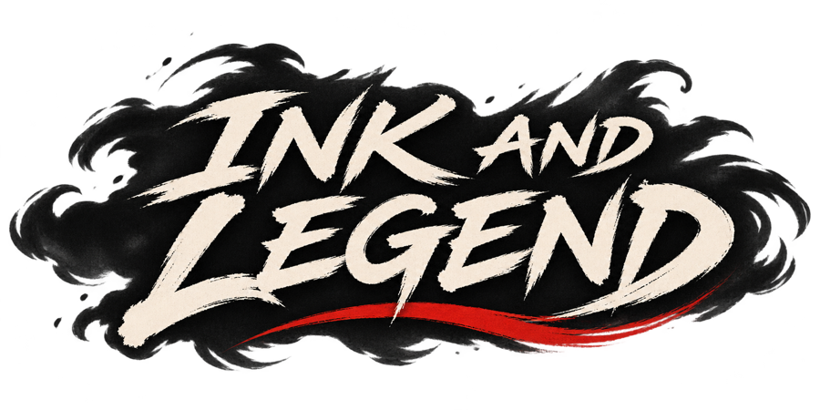

Six duels. Six accounts. One killer.
Support & contactInk & Legend is a one-on-one sword duel game painted in moving sumi-e ink, wrapped around a murder mystery. Ren's father was killed at the river landing. Six people were there that night. Each of them will cross swords with him, and each of them will tell a different story.


Read the blade, not the button
Every duel is decided by timing. Listen for the count-in clacks, parry on the beat, cut back as your opponent recovers, and break their guard for the finishing blow. Mashing never wins.
- Six hand-crafted opponents, each with their own rhythm, feints and second life.
- A fair mystery: a new killer and new testimony every night, always solvable from what you hear.
- Name the killer, then face them in a final duel, and only then learn if you were right.
- Endless Battle mode for pure swordplay.
- Played in portrait with one thumb: a joystick to step, block and cut, or two buttons if you prefer.